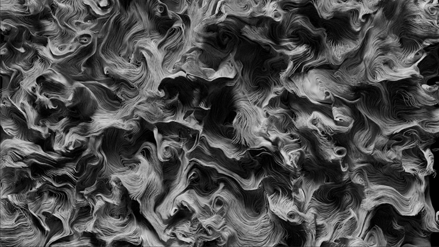

场是在不同位置返回不同值的函数。可以组合简单场以生成以复杂方式变化的场，然后在不同位置对场进行采样，最后在计算中使用这些值。如果构建将场用作输入的复合，可以创建可重复使用的效果，通过更改输入场可以轻松地修改和调整这些效果。

与基于体素的体积不同，场值不会在存储在栅格上的值之间进行插值。相反，场会在位置上直接隐式定义和解算。这意味着它们与分辨率无关。
有助于理解场的一个很好的类比是，如果体积类似于基于图像的纹理，其中体素与像素对应，那么场就像一个可以在任何分辨率下采样的程序纹理。事实上，向量场可以直接用作体积纹理。
另一个类比是 Fcurve。使用 Fcurve 定义从 X 值到 Y 值的自定义映射。然后，可以使用该映射控制一种效果，即在需要 X 值时查找曲线值并在计算中使用生成的 Y 值的效果。同样，可以使用场将位置映射到值，然后使用该场根据其在几何体的点位置的值来驱动效果。
Bifrost 有两种类型的场：
此外，通过代理场，可以使用基于点的几何体和体积的特性创建场。这样，您可以执行将场值与存储在几何体上的特性（例如 point_age 或自定义权重）结合起来的计算。